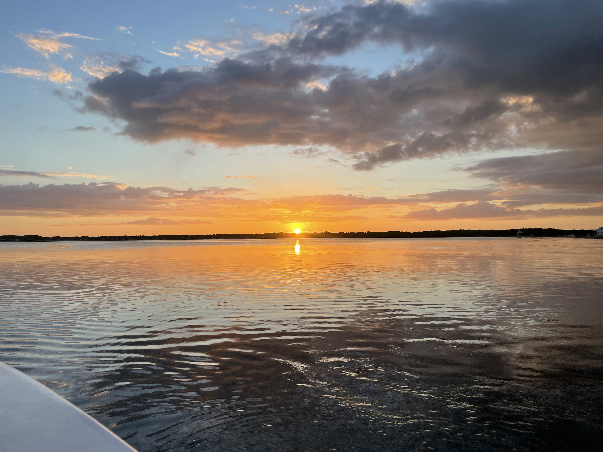

Photo: Lisa Pachkoski
About Belize
Belize is a top destination for snorkeling and diving thanks to the Belize Barrier Reef. It's friendly for first-time travelers and English is widely spoken.
Featured area: San Pedro (Ambergris Caye) — a relaxed island town with easy access to reef snorkeling and day trips.
Important forms & resources
- Belize digital embarkation & declaration forms (iDeclare) — required/strongly recommended for travelers. Open in a new tab.
- Belize Tourism Board — official tourism information and local operator listings.
How to get to San Pedro
From Belize City you can reach San Pedro (Ambergris Caye) by:
- Water taxi: Affordable option with regular service (roughly 1–1.5 hrs depending on operator). Expect to arrive at the San Pedro dock and walk to hotels or take a golf cart taxi.
- Small plane: Quicker and more comfortable if your budget allows (about 15–20 minutes).
My experience: I took the water taxi to San Pedro (cheaper option) and then rode up front of the small plane back to Belize City - so cool and an unforgettable experience! This way you get to enjoy both modes of transport.
Top things to do in Belize
- Snorkel or dive Hol Chan Marine Reserve and Shark Ray Alley.
- Swim with manatees - an absolutely amazing and unforgettable experience you won't find anywhere else!
- Visit Caye Caulker for a relaxed caye experience.
- Take an inland day trip to Mayan ruins (Xunantunich) or cave tubing in the jungle.
- Try local seafood - the seafood here is incredibly fresh and never disappoints!
Places to eat
- Local seaside shacks and small restaurants on Ambergris Caye for fresh seafood.
- Cafes and beachfront restaurants in San Pedro serving Caribbean-style dishes.
- I've personally enjoyed the chicken and rice and beans, the fresh cooked seafood, and the delicious fried breakfast jacks - all absolutely worth trying!
Travel tips & practical info
- Currency: Belize dollar, but US dollars are accepted commonly — carry small bills for tips and local markets.
- Water: Stick with bottled water or ask locals/hotels if tap water is safe where you are staying.
- Transfers: Book water taxis or small planes in advance during busy seasons.
- Conservation: Use reef-safe sunscreen and avoid touching coral.
Sample day / short itinerary
- Morning: Boat trip to Hol Chan & Shark Ray Alley for snorkeling.
- Afternoon: Lunch in San Pedro, relax on the beach, rent a golf cart to explore.
- Evening: Sunset walk and seafood dinner.
Want local suggestions or a printable packing list for Belize? I can create one with reef-safe sunscreen, snorkel tips, and recommended local operators.